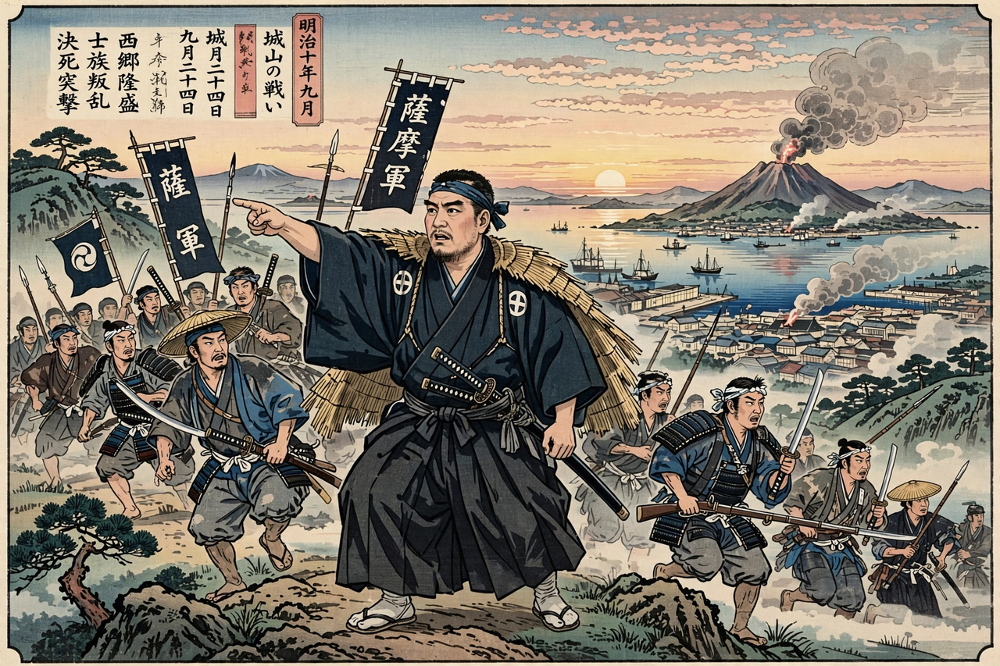

| Satsuma Rebellion | |
|---|---|
 Saigō Takamori and his officers at Shiroyama, 1877 | |
| Date | 29 January – 24 September 1877 |
| Location | Kyūshū, Japan |
| Result | Imperial Japanese Army victory |
| Belligerents | Empire of Japan vs. Satsuma rebels |
| Commanders | Prince Arisugawa Taruhito, Yamagata Aritomo vs. Saigō Takamori †, Kirino Toshiaki † |
| Strength | c. 51,800 imperial troops vs. c. 25,000–40,000 rebels |
The Satsuma Rebellion, also known as the Seinan War (西南戦争, Seinan Sensō, "Southwestern War"), was a revolt of disaffected samurai against the new imperial government of Japan, lasting from 29 January to 24 September 1877. It was the last and greatest of a series of armed uprisings against the government of Emperor Meiji, and its suppression by a conscript army ended serious military resistance to the Meiji Restoration.
The reforms of the 1870s — conscription in 1873, the commutation of samurai stipends, and the 1876 ban on wearing swords in public — destroyed the economic basis and social status of the samurai class. In Satsuma (modern Kagoshima Prefecture), the former domain of the rebellion's leader Saigō Takamori, a hero of the Boshin War, semi-autonomous private academies trained thousands of young samurai. Saigō had resigned from the government in 1873 after losing the debate over invading Korea, and retired to Kagoshima. Tensions rose when the government attempted to remove Satsuma's arsenal in January 1877, provoking attacks on government property.
Saigō reluctantly accepted command of the rebels and marched north to besiege Kumamoto Castle in February 1877. The castle's garrison held out for nearly two months against greatly superior numbers, while imperial reinforcements — conscripts drawn largely from peasant backgrounds, led in the field by Yamagata Aritomo — landed behind the rebels. The rebel failure at Kumamoto broke the offensive; the key battle of Tabaruzaka in March opened the way for the imperial army to relieve the castle. Saigō's forces retreated south through Kyūshū, fighting delaying actions and losing artillery and modern weapons.
By September 1877 Saigō was reduced to a few hundred men holding the hill of Shiroyama overlooking Kagoshima. On 24 September some 30,000 imperial troops stormed the position. Saigō was shot and wounded; according to tradition he was carried by his follower Beppu Shinsuke to a hiding place and beheaded to prevent his capture. The remaining rebels charged downhill and were killed.
The rebellion cost the government some six million yen and over 6,000 killed on the imperial side, with comparable rebel losses. Its failure proved that the conscript army could defeat the finest samurai force in Japan, ending the samurai as a military class. Saigō was posthumously pardoned in 1889 and enshrined in popular memory as the tragic "last true samurai"; a famous bronze statue of him stands in Ueno Park, Tokyo.